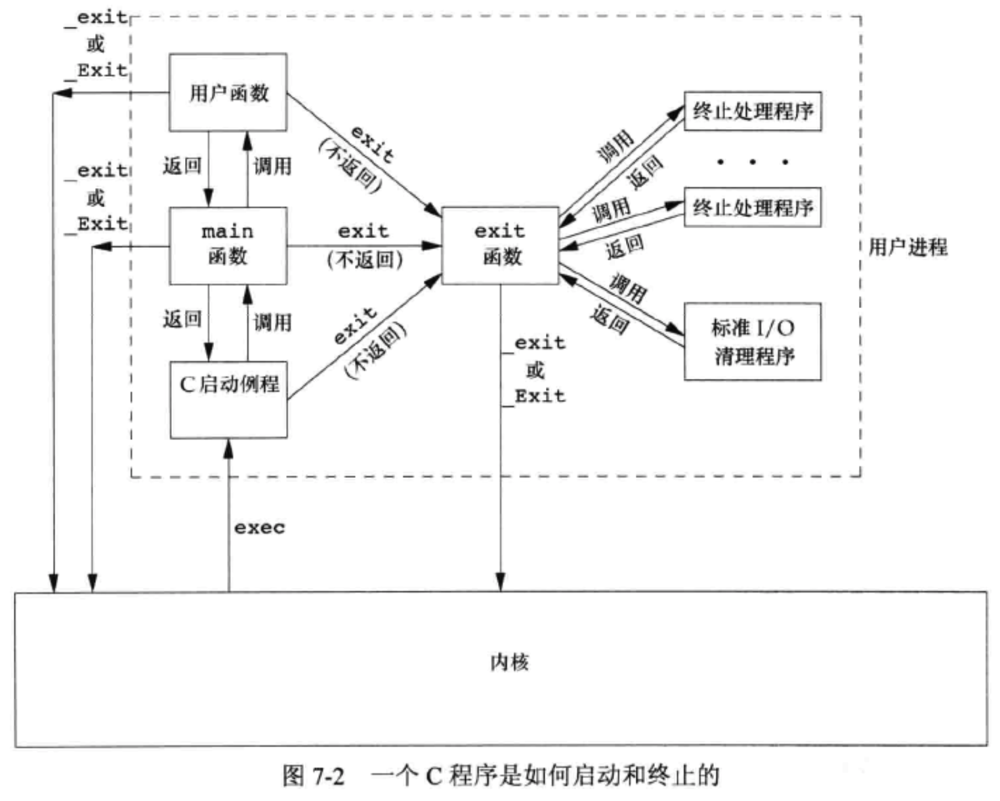
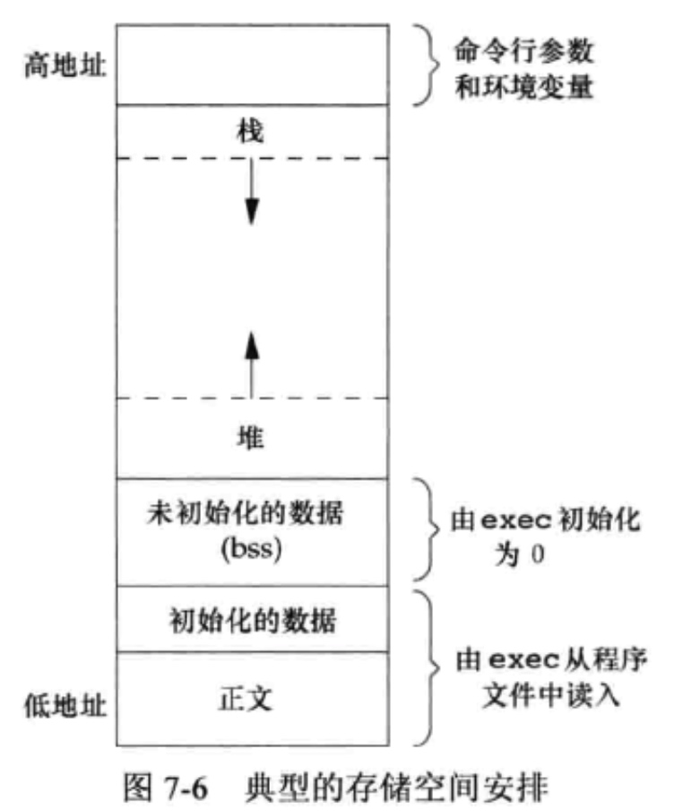

main 函数由一个特殊例程（往往是用汇编写的）来调用
exit(main(argc, argv))
进程终止的8种方式
- 从 main 返回
- 调用 exit（会在退出前做一些IO库的清理操作）
- 调用 _exit 或 _Exit（直接进入内核）
- 最后一个线程从器启动例程返回
- 从最后一个线程调用 pthread_exit
异常 3 种
- 调用 abort
- 接收到一个信号
- 最后一个线程对取消请求作出相应

atexit
一个进程最多能登记32个函数，这些函数由 exit 自动调用。
#include <stdlib>
int atexit(void (*func)(void*));
成功返回0，出错返回非0
环境表
extern char **environ;
环境为A=B形式，如 HOME=/Users/hh
关于环境变量的操作
#include <stdlib.h>
char *getenv(const char *name);
int putenv(char *str);
若成功返回0，否则非0
int setenv(const char *name, const char *value, int rewrite);
int unsetenv(const char *name);
若成功返回0，否则-1
- unsetenv, 不存在该环境变量定义也不报错
c语言程序的存储空间布局

存储空间分配
- malloc 分配指定字节数的存储区
- calloc 分配指定字节数的存储区，并且该空间中的每一位都为0
- realloc 增加或减少原分配区域的大小
#include <stdlib.h>
void *malloc(size_t size);
void *calloc(size_t nobj, size_t size);
void *realloc(void *ptr, size_t newsize);
进程资源控制
#include <sys/resource.h>
int getrlimit(int resource, struct rlimit *rlptr);
int setrlimit(int resource, const struct rlimit *rlptr);
规则
1. 任何一个进程都可将一个软限制值更改为小于等于其影限制值。
2. 任何一个进程都可降低其硬限制值，但它必须大于或等于其软限制值。这种降低，对普通用户而言是不可逆的。
3. 只有超级用户进程可以提高硬限制值。